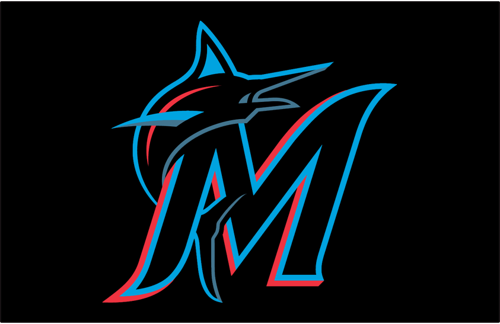

The Marlins began play in the 1993 season as the Florida Marlins. They started playing their home games at Joe Robbie Stadium which was shared with the Miami Dolphins. In 2012, they moved to LoanDepot Park (was called Marlins Park). They have only made the postseason three times in their history but somehow won two World Series out of those three times. They had a 17-year playoff drought until that was broken in 2020, but that was the first year in which they made the postseason in which they didn't win the World Series. They did make history as the first team to ever win the World Series as a wild card in 1997.
